User Guide
Build your Microsoft Fabric data, semantic models, Power BI reports and AI answers step by step – by clicking buttons or by asking Copilot in plain language. No coding needed.
| For | Business users, analysts and anyone who wants to use Fabric MCP Studio – no technical background required |
| App version | 1.33 and later |
| Updated | October 2026 |
Fabric MCP Studio is an app that runs on your own computer and opens in your web browser. It helps you build an analytics solution in Microsoft Fabric – your organization's data platform – without writing code.
Think of it as a guided assembly line. Each station builds on the one before:
You can do every step in two ways:
You don't need to be an expert, but these words come up often. Keep this page handy.
| Word | What it means in plain language |
|---|---|
| Microsoft Fabric | Your organization's online data platform. The app builds everything there. |
| Workspace | A folder in Fabric that holds everything for one project. You choose one, or the app creates one. |
| Capacity | The computing power your organization pays for (or a free trial). A workspace runs on a capacity. If it is paused, nothing can run. |
| Data source | Where your numbers come from: a sample, a company database, or a lakehouse/warehouse already in Fabric. |
| Lakehouse, warehouse, SQL database | Places in Fabric that store tables of data. You don't need to know the difference – the app handles it. |
| OneLake | Fabric's single storage for all data. Everything you connect ends up readable there. |
| Semantic model | The "single version of the truth": your tables, how they relate, and business measures such as Total Sales. Reports and answers are built on it. |
| Measure | A business calculation, for example Total Sales, Profit Margin % or Number of Customers. |
| Relationship | How two tables connect, for example each sale belongs to one customer. |
| Power BI report | Pages of charts, tables, cards and maps people open in Power BI. |
| Org app | A package of reports you publish to a group of people, so they don't need workspace access. |
| Ontology | Your business vocabulary for AI: things (Customer, Product), how they relate, and business rules in plain English. |
| Copilot | The AI assistant inside the app. It answers questions and builds things after you approve. |
| Data agent | A Fabric AI assistant that answers questions about your semantic model; it can be used in Microsoft 365 Copilot. |
| Task flow | A picture in Fabric of how the items in a workspace work together (raw data → curated data → model → reports). |
| Approval | A pop-up that shows exactly what Copilot wants to change. Nothing changes until you select Approve. |
Check this list once. If something is missing, the right-hand column tells you who can help.
| You need | Why | Who can help |
|---|---|---|
| A Windows computer with internet access | The app runs on your computer and talks to Fabric online. | – |
| A work account (Microsoft Entra ID) that can use Microsoft Fabric | The app signs in as you. | Your IT department |
| Access to a Fabric capacity (a free trial works for most steps) | Fabric needs computing power to build things. | Your Fabric administrator, or start a trial at app.fabric.microsoft.com |
| Permission to create or edit a workspace (Contributor or higher) | Everything the app builds goes into one workspace. | The workspace owner or your Fabric administrator |
| Your organization's AI service details – usually an Azure AI Foundry / Azure OpenAI endpoint and deployment name | Copilot inside the app uses the AI your organization already has. | Your IT or AI team |
| Node.js (free) installed on your computer | The app needs it to run. Installing it takes two minutes – see the next chapter. | You, or IT if you can't install software |
| The app files (a ZIP file or a link to the GitHub repository) | That's the app itself. | The person who shared Fabric MCP Studio with you |
Optional: the Azure CLI. If your IT team installed it and you have signed in with it (az login),
the app reuses that sign-in automatically. Without it you simply sign in through your browser.
.msi).C:\FabricMCPStudio and select Extract.powershell -ExecutionPolicy Bypass -File C:\FabricMCPStudio\scripts\create-shortcut.ps1
(change the folder if you extracted somewhere else).
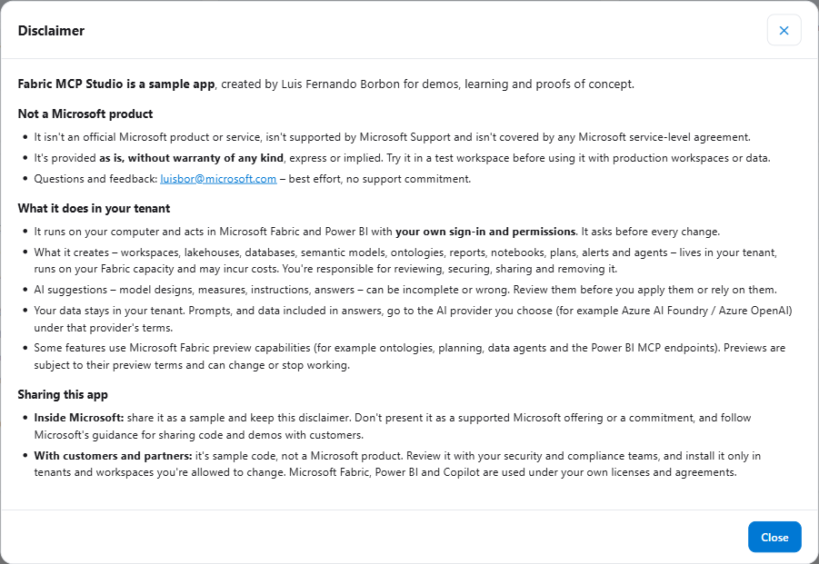
Select Shut down at the top right of the app. If a job is still running, wait for it to finish first – shutting down stops it.
When someone gives you newer app files, replace the old folder (or let IT update it). The app notices and shows a yellow banner at the top: "A newer version is installed – Restart now". Select Restart now; the page reloads by itself after a few seconds. Your project, chats and settings are kept.
Select the version number next to the app name (for example v1.33.26) to see What's new.
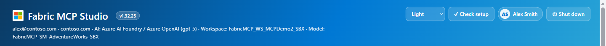
Copilot uses the AI service your organization already licenses. You set it once.
In Settings › Approvals keep Ask every time (recommended). Every change Copilot wants to make then opens a review window first. Auto-approve is only for demos in a test workspace; Read-only lets Copilot answer questions but never change anything.
Select Check setup at the top. The app tests your sign-in, capacity, AI, connections and Fabric settings.
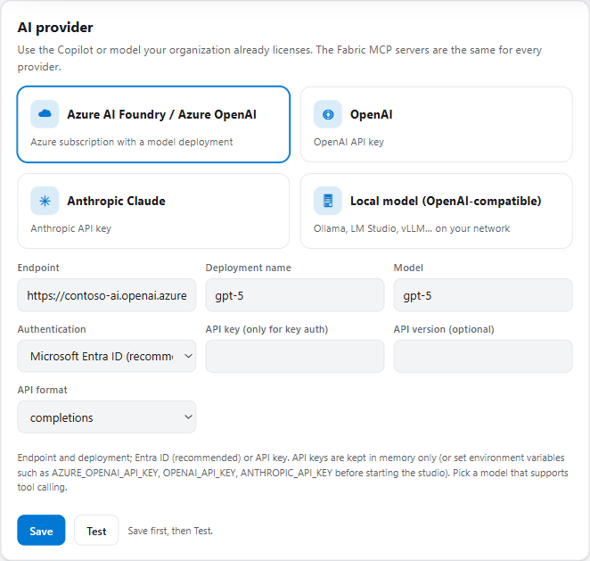
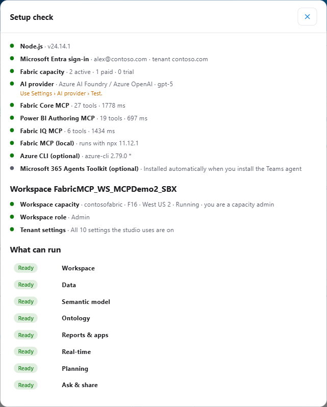
The app opens on the solution map – a picture of everything you can build, from left (data) to right (sharing). The top row is analytics; the bottom row is real-time (live) data.
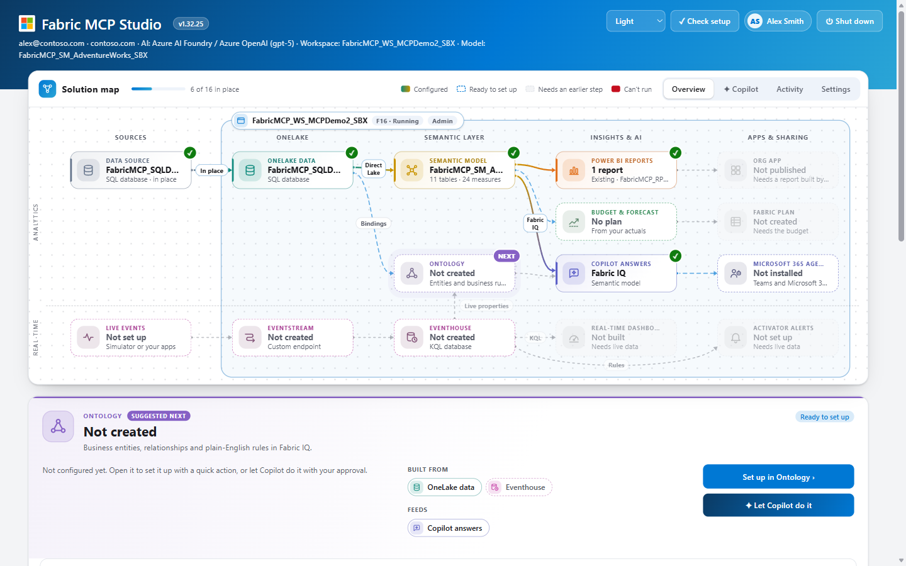
| What you see | What it means |
|---|---|
| A box with a green ✓ | That part is built (configured). Its name and details are shown. |
| A box with a dashed border | Ready to set up – you can build it now. |
| A faded grey box | Needs an earlier step – build the parts to its left first. |
| A purple NEXT badge | The step the app suggests you do next. |
| A red badge | Can't run – something is missing (for example a Fabric setting). Select the box to see why. |
| Lines between boxes | What is built from what. Moving lines mean a job is running. |
| 6 of 16 in place (top) | Your progress. |
At the top right of the map: Overview (the map and suggestions), Copilot (the full-size chat), Activity (everything that happened) and Settings. On other pages the map gets smaller; Hide map folds it away.
Longer tasks – loading data, building a report – run in the background. A small card at the bottom right shows the progress. You can keep working meanwhile. Select the card to see the details, or open Activity.
Copilot is your assistant inside the app. It can explain your data, answer business questions with your real numbers, and build things for you.
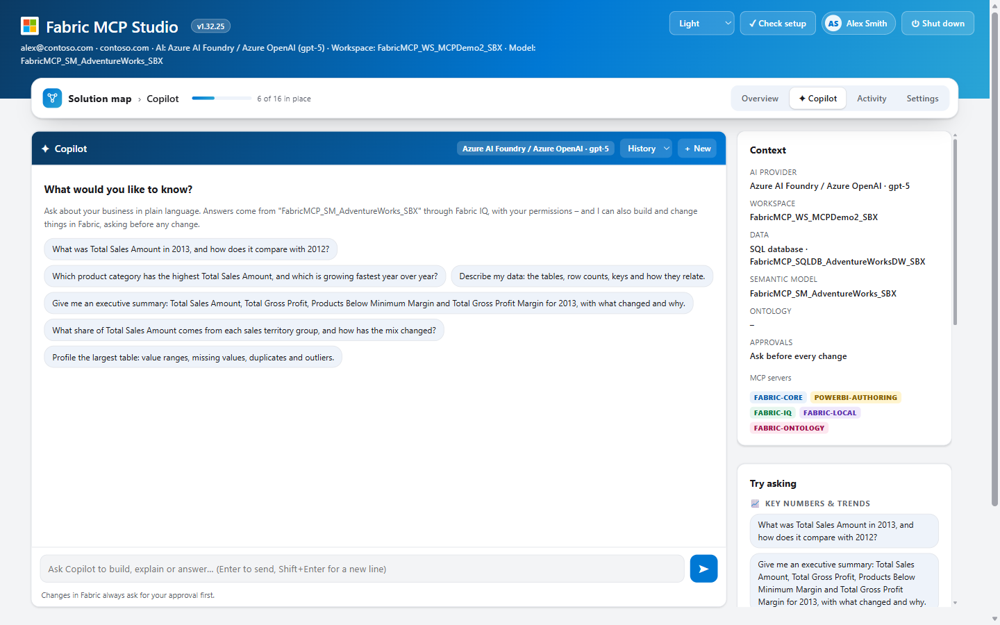
When Copilot wants to create or change something in Fabric, a window titled "Copilot wants to make a change" shows exactly what it will do. Read it, then select Approve or Decline. Nothing changes until you approve.
When Copilot suggests a design (a semantic model, a report, a data agent), it shows an Apply suggestions or ✓ Apply button under its answer. Select it to review and build – there's no need to type "yes".
Before the app creates anything, tell it what this environment is for. It then names every item clearly, for
example Sales_WS_Analytics_PROD = the Sales team's workspace for analytics in
production. Anyone can tell from the name what an item is and where it belongs.
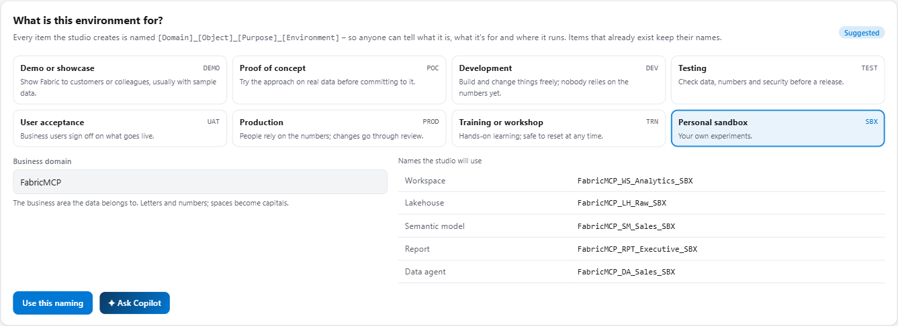
Everything the app builds goes into one Fabric workspace. Create a new one, or use one you already have.
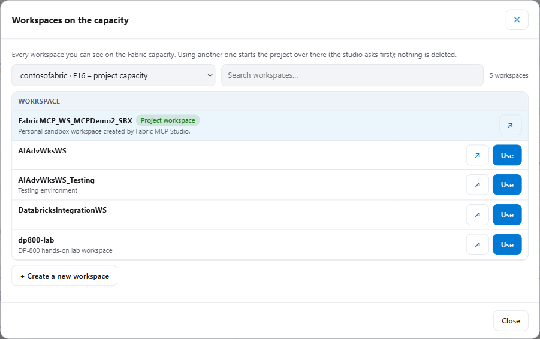
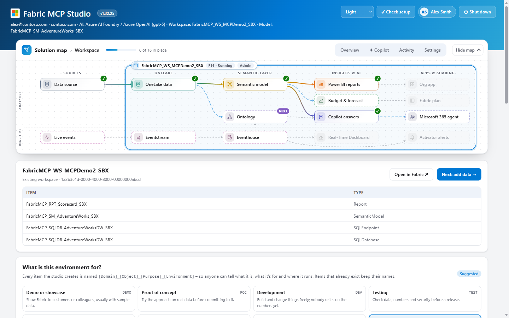
Open the Data page. Pick one of three ways to bring in data. Not sure? Start with sample data – it's the fastest way to see the whole app working.
| Option | Choose it when… | Time |
|---|---|---|
| Sample data | You want to learn or demo the app. Two samples: Contoso Retail (a store chain) and AdventureWorksDW2022 (a bike company). | 3–8 min |
| Your databases | Your data is in Azure SQL, SQL Server or PostgreSQL. Fabric keeps a live copy (called mirroring). | 5–15 min |
| Existing Fabric data | Your data is already in a Fabric lakehouse, warehouse, mirrored database or SQL database. | 1 min |
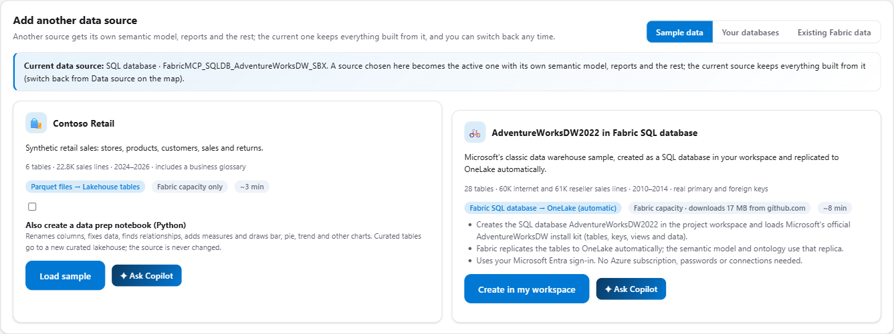
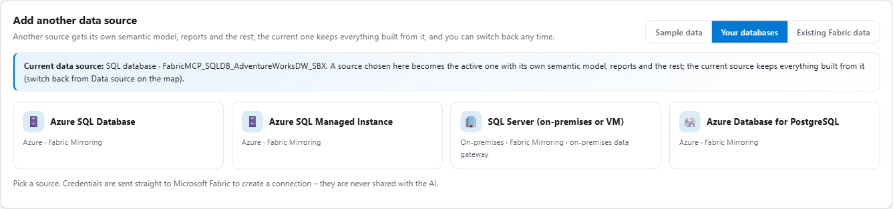
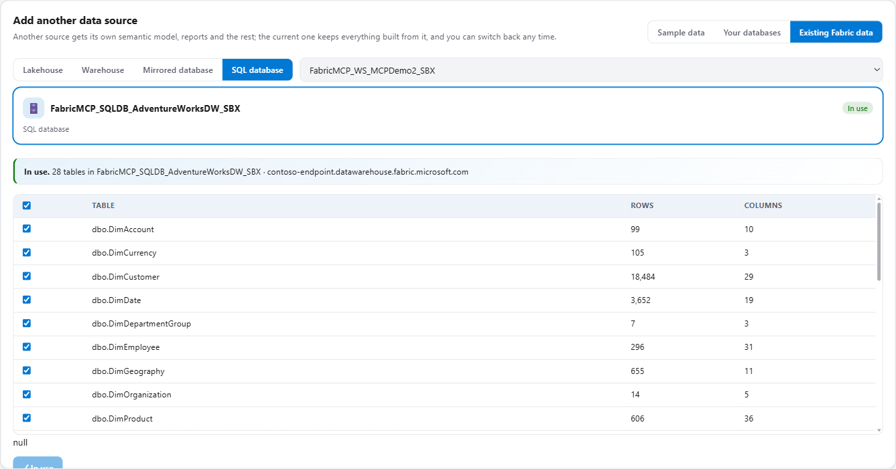
The top of the Data page summarizes your data: where it lives, how it reaches Fabric, and every table with its rows. Select ✦ Explain my data for a plain-language tour, or Next: semantic model → to continue.
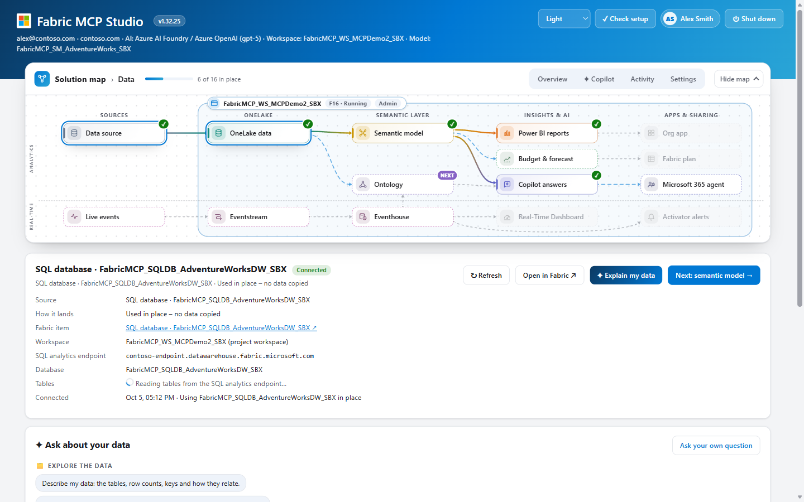
You can add another data source to the same workspace at any time (Add another data source at the bottom of the Data page). Each source keeps its own model, reports and the rest. To switch between them, double-click Data source on the map – nothing changes in Fabric when you switch.
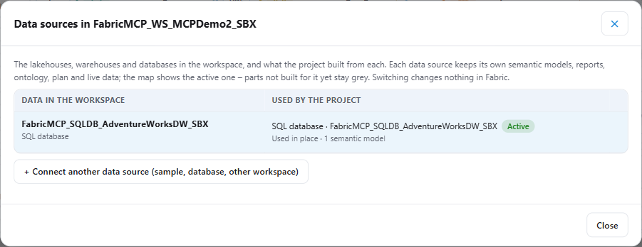
The semantic model turns tables into business numbers everyone trusts. Open the Semantic model page.
Prefer help? Select ✦ Design it with Copilot. Copilot proposes tables, names, relationships and measures, then shows Apply suggestions to review and create it.
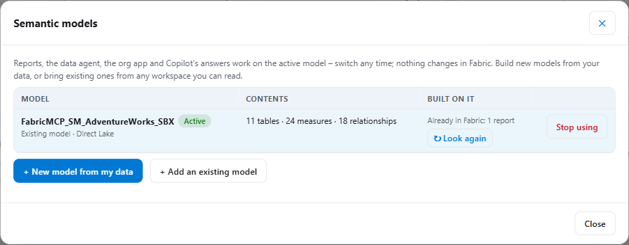
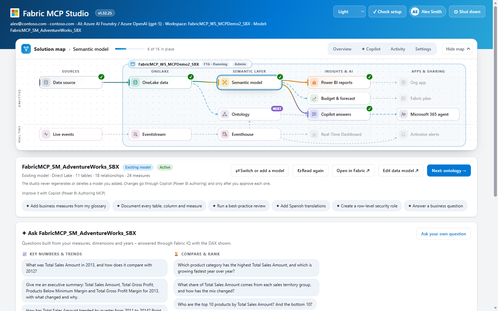
Select any of the ✦ buttons on the page, for example ✦ Add business measures from my glossary or ✦ Run a best-practice review. Copilot explains each change and asks for approval.
Sometimes data contains duplicate rows, and the model can't answer (you'll see a message such as "has repeated values … one side of a relationship"). Select 🩺 Check and fix the data (or 🩺 Check data in the model bar).
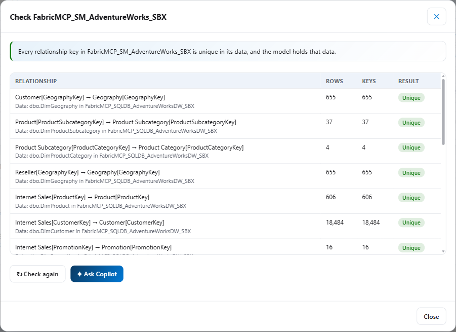
Open Reports & apps. The bar at the top shows which semantic model the reports are built on.
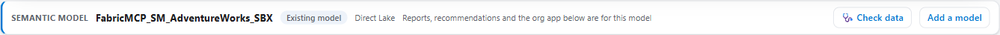
Recommended for your data suggests reports for different audiences, each with the reasons from your own data.
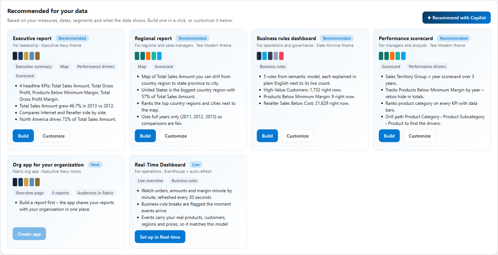
This card shows what the reports will use: headline numbers (KPIs), time, breakdowns, top-10 lists and the Map line – the places it found, such as Country › State › City.
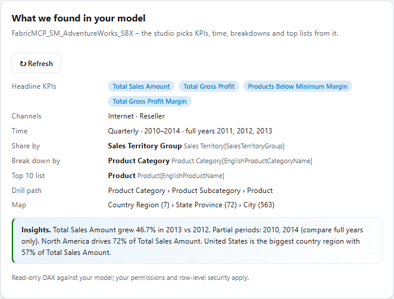
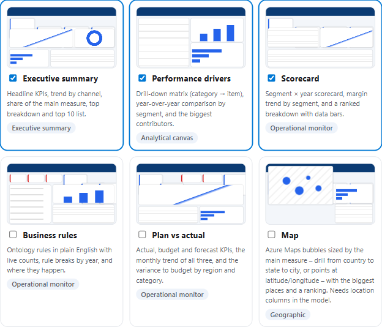
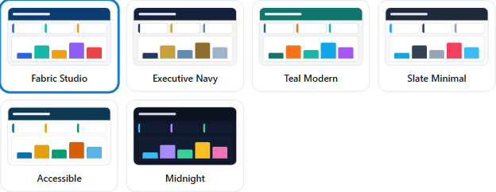
When your data has countries, states, cities, postal codes or latitude/longitude, the app adds a Map page: bubbles sized by your main number, which you can drill from country to state to city, next to the top places. You don't have to do anything special – the app finds the location columns by itself.
Under Your own templates, select Upload template (or drop files on the box). Power BI templates (.pbit), reports (.pbix), zipped Power BI projects, report layouts and themes (.json) are supported. Then select Use template: the app checks which fields match your model and builds the report with your template's look.
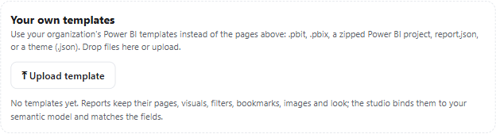
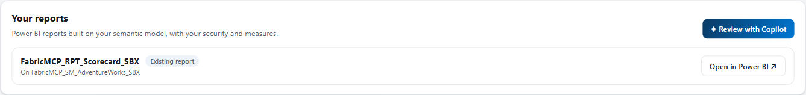
Open Ask & share.
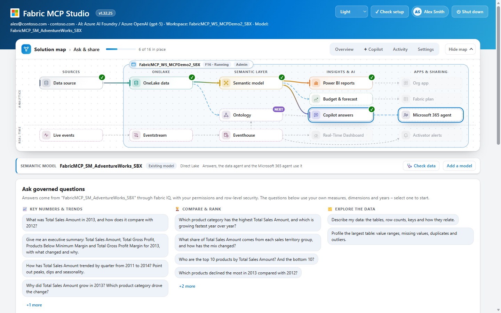
Select any suggested question, or select Ask your own question. Answers use your real measures and respect everyone's permissions and row-level security. The questions are written for your data – your measures, categories and years.
A data agent is an AI assistant in Fabric that answers questions about your model – also inside Microsoft 365 Copilot. Select Create data agent, or ✦ Suggest it with Copilot and then ✓ Apply suggestions to review its instructions first.
In Microsoft 365 Copilot & Teams, select Install for me to try the agent yourself, or Publish to my organization to submit it for your administrator's approval.
Export › Download project & audit log (JSON) saves what was built and every approval.
These parts add more value but aren't required. Each has its own page and box on the map.
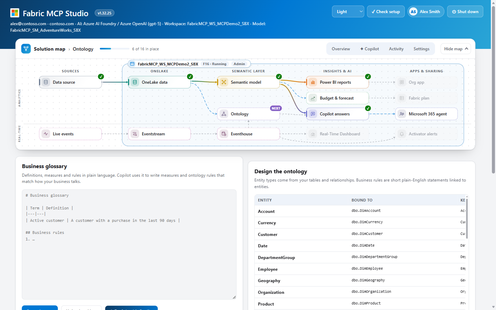
Planning creates next year's budget and a rolling forecast from your actual numbers, and a Plan vs actual report.
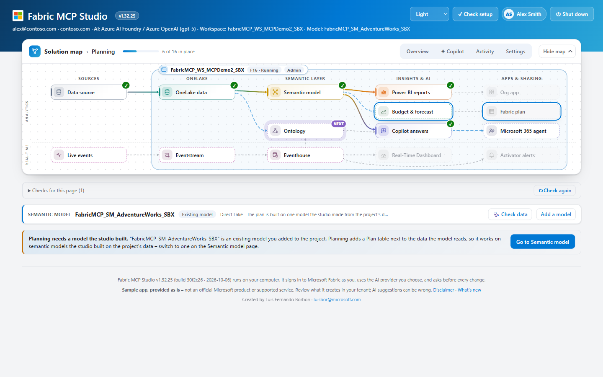
Stream live events shaped like your data, watch them on an auto-refreshing dashboard and get alerts.
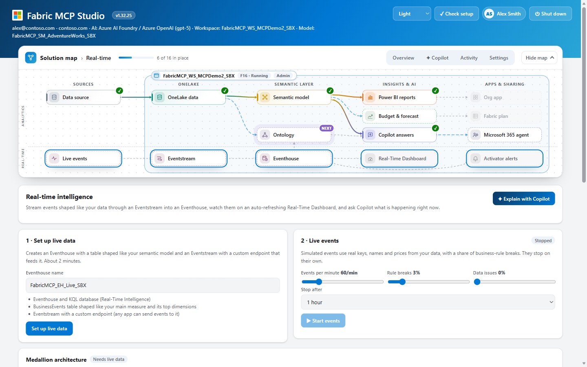
A task flow shows in Fabric how your items fit together. On the Workspace page, in Task flow, pick the flow already in your workspace or one of Fabric's ready-made flows (for example Medallion), check where each item goes, then select Use …. The app keeps it up to date as you add or remove items.
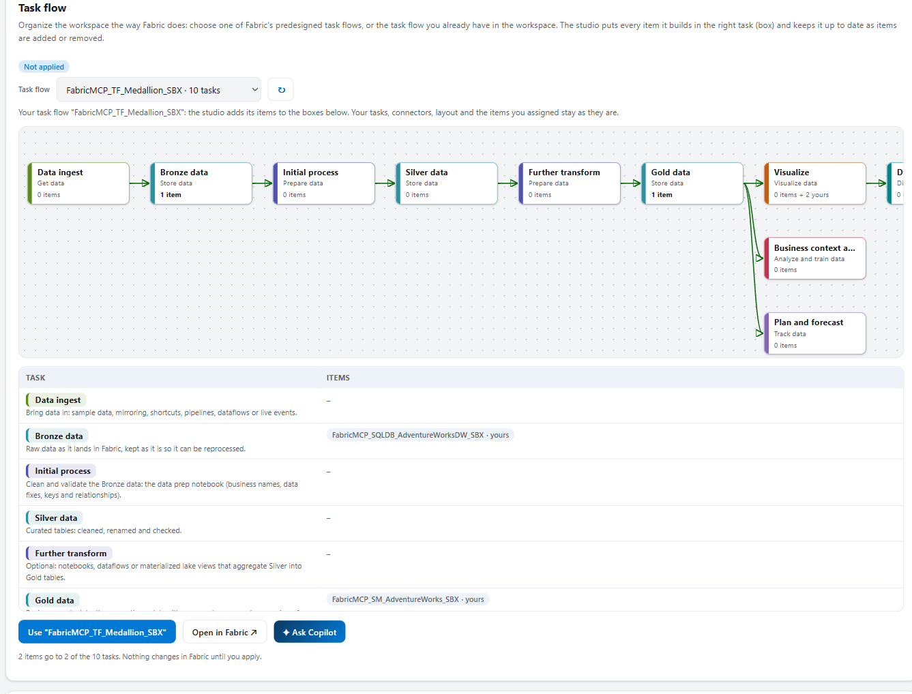
On the Overview page, Items in this project lists everything the project uses and what depends on it. Select Remove to delete an item in Fabric. The button is disabled while something still uses the item – remove that first (for example the reports before their semantic model). Before anything happens, a window tells you exactly what Remove will do. Items the app didn't create – a model you added, or data you used in place – are only disconnected from the project; the app never deletes them.
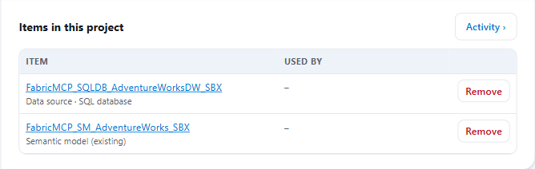
Start a new project only clears the app's memory on your computer – nothing is deleted in Fabric.
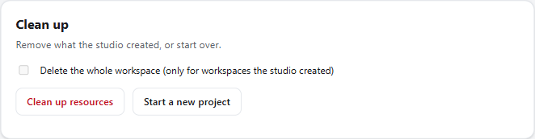
The Activity tab lists every item created (with links), every job, and every approval or decline.
First select Check setup – it finds most problems and says how to fix them. You can also ask Copilot: "Why can't I build a report?"
| What you see | What to do |
|---|---|
| The browser says the page can't be reached | The app isn't running. Double-click the desktop icon and wait a few seconds. |
| "Fabric MCP Studio isn't running" at the top of the page | Start it again from the desktop icon; the page reconnects by itself. |
| Sign in at the top right, or "Not signed in" | Select Sign in › Sign in with browser and use your work account. |
| Copilot says the AI provider isn't set up | Settings › AI provider: enter the details from IT, Save, then Test. |
| A red badge on a map box, or "Can't run" | Select the box – it says what is missing (often a Fabric setting your administrator must turn on). |
| "The capacity is paused" | Ask your Fabric administrator to resume the capacity, then select Check again. |
| A grey box you can't open | Build the parts to its left first – the box says what it needs. |
| "…has repeated values … one side of a relationship" | Select 🩺 Check and fix the data (Step 4). |
| The check says Model has older rows | Select ↻ Reload the model; if it persists, wait a few minutes and reload again. |
| The map shows a message instead of a map | Ask your Fabric administrator to turn on "Use Azure Maps visual". |
| "Preview not available" for a report | Normal when your organization turns PDF export off. Select Open in Power BI. |
| A yellow banner "A newer version is installed" | Select Restart now (wait for running jobs to finish first). |
| Something says "Not found" or "needs a restart" | The app was updated: select Restart now, or Shut down and start it again. |
| A job failed | Open the job card (bottom right) or Activity to read why. Fix the cause and run it again – you can also ask Copilot what went wrong. |
| I want to… | Go to | Select |
|---|---|---|
| Start the app | Desktop | Double-click Fabric MCP Studio |
| Stop the app | Top right | Shut down |
| Sign in or switch account | Top right | Your name, or Sign in |
| Check that everything works | Top right | Check setup |
| Set up the AI | Settings › AI provider | Fill in, Save, Test |
| Name my environment | Workspace | Pick a card, type the domain, Use this naming |
| Create or pick a workspace | Workspace | Create new or Use existing |
| Switch workspace | Map | Double-click the workspace name |
| Load sample data | Data › Sample data | Load sample / Create in my workspace |
| Use data already in Fabric | Data › Existing Fabric data | Pick the item, Use in place |
| Mirror a company database | Data › Your databases | Fill in, Start mirroring |
| Switch data source | Map | Double-click Data source |
| Create a semantic model | Semantic model | Create semantic model |
| Use an existing model | Semantic model | ⇄ Switch or add a model › + Add an existing model |
| Fix a model data error | Model bar | 🩺 Check data |
| Build a report | Reports & apps | Build on a recommendation, or Build report |
| Add a map | Reports & apps › Pages | Tick Map, or build the Regional report |
| Use our own report template | Reports & apps | Upload template, then Use template |
| Share reports as an app | Reports & apps | Create app, then Publish in Fabric |
| Ask a business question | Ask & share or Copilot | A suggested question, or type your own |
| Create a data agent | Ask & share | Create data agent |
| Add the agent to Teams | Ask & share | Install for me |
| Remove one item | Overview › Items in this project | Remove |
| Delete everything the app built | Settings › Clean up | Clean up resources |
| See what happened | Activity | – |
| Update the app | Yellow banner | Restart now |